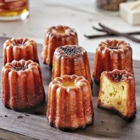
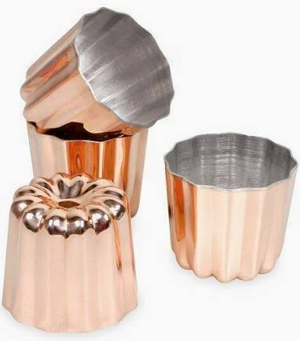

Cannelé
Bordelais


⟹ Douceurs ⟸
Le cannelé bordelais est l'une des pâtisseries les plus emblématiques de France, né à Bordeaux dans un contexte aussi inattendu que savoureux. Son origine remonterait au XVIIIe siècle, dans les couvents des Annonciades — des sœurs carmélites installées sur les quais de Bordeaux — qui récupéraient la farine tombée des sacs lors du chargement des navires négriers, ainsi que les jaunes d'œufs que les vignerons du Médoc leur cédaient après avoir clarifié leurs vins avec les blancs.
De cette rencontre improbable — farine de récupération, jaunes d'œufs en surplus, rhum des Antilles arrivé par les bateaux des quais — naquit une pâtisserie à nulle autre pareille : une croûte caramélisée, presque laquée, qui dissimule un intérieur alvéolé, moelleux et parfumé à la vanille et au rhum.

« Le cannelé est un mystère gourmand : dur comme du caramel à l'extérieur, tendre comme une crème à l'intérieur. C'est la dualité bordelaise incarnée. »
— Jean-Marie Amat, chef emblématique de Bordeaux
Longtemps tombé dans l'oubli après la Révolution, le cannelé renaît au début du XXe siècle grâce aux pâtissiers bordelais qui le remettent au goût du jour. En 1985, la Confrérie du Canelé de Bordeaux (orthographe historique sans accent) est fondée pour en codifier la recette et défendre son authenticité face aux imitations industrielles.
Aujourd'hui, le cannelé bordelais est produit dans des moules en cuivre étamé — la tradition — ou en silicone pour un usage domestique, mais sa recette reste invariable : une pâte reposée minimum 24 heures, une cuisson longue à haute température, et l'impérative présence de rhum ambré et de vanille de Madagascar.
Le canelé de la Confrérie (orthographe historique) : sans accent sur le « e », cette graphie ancienne est défendue par la Confrérie du Canelé fondée en 1985. La recette est strictement codifiée : uniquement des moules en cuivre étamé, de la cire d'abeille pour le chemisage, et du rhum agricole des Antilles françaises.
Cannelés chocolat ou café : des pâtissiers contemporains proposent des versions infusées au chocolat noir ou au café, substituant partiellement la vanille. Ces variantes respectent la forme et la technique mais s'éloignent de la recette traditionnelle.
Cannelé miniature (bouchée) : très populaires en version cocktail, les mini-cannelés de 3 cm sont cuits dans des moules de petite taille et servis comme amuse-bouches sucrés lors des réceptions bordelaises.
Version sans alcool : le rhum peut être remplacé par du jus d'orange, de la fleur d'oranger ou simplement supprimé, pour une version accessible aux enfants tout en préservant la texture caractéristique.
Le cannelé se trouve à tous les coins de rue à Bordeaux, mais certaines adresses en font un véritable art :
Baillardran (plusieurs boutiques en ville et en gare) — la maison de référence, fondée en 1987, cuisant ses cannelés dans des moules en cuivre et les vendant chauds toutes les deux heures. Une institution incontournable.
La Toque Cuivrée (Chartrons) — artisan qui travaille exclusivement les moules en cuivre étamé à l'ancienne et propose une vingtaine de parfums en saison, tout en respectant scrupuleusement la recette de la Confrérie.
Lemoine (Saint-Pierre) — l'une des plus anciennes maisons de cannelés de Bordeaux, fournisseur des grandes tables étoilées de la région et exportateur mondial du savoir-faire bordelais.
On les trouve également dans tous les marchés couverts bordelais (Marché des Capucins, Marché du Grand Parc), ainsi qu'à la Cité du Vin en version dégustation commentée.